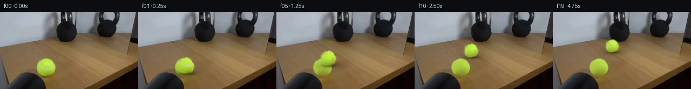

![首帧]()

Round 00
2026-11-05T17:04:55.539459+00:00像素候选变化代码 +209/−0inspection 更新
pixels 95b90631f8fe2c2d · code 7f053b7c45f7778c
查看本轮 generate.py 真实 diff
--- previous/generate.py
+++ current/generate.py
@@ -0,0 +1,209 @@
+"""Local source-pixel continuation, using no network or learned models."""
+from pathlib import Path
+import json
+import numpy as np
+from PIL import Image, ImageDraw
+import cv2
+from scipy.ndimage import map_coordinates, gaussian_filter, distance_transform_edt
+from artifact_io import save
+
+ROOT=Path(__file__).resolve().parent
+SOURCE=np.asarray(Image.open(ROOT/'first_frame.png').convert('RGB'))
+H,W=SOURCE.shape[:2]
+C0=np.array([85.35,103.65])
+RX,RY=17.25,16.90
+Y,X=np.mgrid[:H,:W].astype(float)
+
+
+def sample(arr,x,y):
+ if arr.ndim==2:
+ return map_coordinates(arr,[y,x],order=1,mode='nearest')
+ return np.stack([map_coordinates(arr[:,:,c],[y,x],order=1,mode='nearest') for c in range(arr.shape[2])],axis=-1)
+
+
+def recover_table():
+ # Restore only the original ball and its shadow. The donor is another
+ # portion of this same photographed tabletop; Poisson cloning joins it.
+ m=(((X-C0[0])/18.5)**2+((Y-C0[1])/18.15)**2<1)
+ m|=(((X-87.5)/16.0)**2+((Y-120.0)/5.0)**2<1)
+ foreground=(X<91)&(Y>109)&(SOURCE[:,:,0]<90)&(SOURCE[:,:,2]>SOURCE[:,:,0]*.67)
+ m &= ~foreground
+ donor=sample(SOURCE.astype(float),X+41,Y+8).clip(0,255).astype(np.uint8)
+ yy,xx=np.nonzero(m)
+ x0,x1=xx.min()-2,xx.max()+3
+ y0,y1=yy.min()-2,yy.max()+3
+ mask=(m[y0:y1,x0:x1]*255).astype(np.uint8)
+ patch=donor[y0:y1,x0:x1].copy()
+ restored=cv2.seamlessClone(patch,SOURCE.copy(),mask,((x0+x1)//2,(y0+y1)//2),cv2.NORMAL_CLONE)
+ # Retain the foreground silhouette and all other fixed pixels exactly.
+ restored[~m]=SOURCE[~m]
+ Image.fromarray(restored).save(ROOT/'.tmp'/'recovered_table.png')
+ return restored.astype(float),m
+
+BASE,REPAIR_MASK=recover_table()
+
+# Fit smoothly shaded source felt, excluding the pale seam.
+U=(X-C0[0])/RX
+V=(Y-C0[1])/RY
+R2=U*U+V*V
+NZ=np.sqrt(np.maximum(0,1-R2))
+
+def basis(u,v,z):
+ return np.stack([np.ones_like(u),u,v,z,u*v,u*u,v*v,v*z,u*z],axis=-1)
+
+B=basis(U,V,NZ)
+valid=(R2<.89**2)&(SOURCE[:,:,2]<SOURCE[:,:,1]*.37)&(SOURCE[:,:,1]>SOURCE[:,:,0]+14)
+COEFF=np.linalg.lstsq(B[valid],SOURCE[valid].astype(float),rcond=None)[0]
+
+def smooth_felt(u,v,z):
+ return np.clip(basis(u,v,z)@COEFF,[110,125,25],[205,248,88])
+
+# Unmix the photographed antialiased silhouette using the reconstructed wood.
+SMOOTH=smooth_felt(U,V,NZ)
+projection=((SOURCE-BASE)*(SMOOTH-BASE)).sum(axis=-1)/(np.square(SMOOTH-BASE).sum(axis=-1)+1e-6)
+alpha=np.where(R2<.83**2,1,np.clip(projection,0,1))
+alpha*=np.clip((1-np.sqrt(R2))*17.1+1.05,0,1)
+alpha[R2>1.13**2]=0
+alpha=gaussian_filter(alpha,.27)
+F=(SOURCE.astype(float)-BASE*(1-alpha[:,:,None]))/np.maximum(alpha[:,:,None],.10)
+F=np.clip(F,[80,100,10],[245,255,190])
+residual=F/np.maximum(SMOOTH,1)
+# At the rim, move source texture outward from the nearest clean photographed
+# surface sample, avoiding background contamination in the sphere texture.
+clean=(R2<.95**2)&(alpha>.97)
+_,inds=distance_transform_edt(~clean,return_indices=True)
+residual[~clean]=residual[inds[0][~clean],inds[1][~clean]]
+
+SCALE=4
+ys,xs=np.mgrid[:H*SCALE,:W*SCALE].astype(float)
+xs=(xs+.5)/SCALE-.5
+ys=(ys+.5)/SCALE-.5
+ALPHA_BIG=cv2.resize(alpha,(W*SCALE,H*SCALE),interpolation=cv2.INTER_LINEAR)
+AXIS=np.array([.855,.519,0.])
+AXIS/=np.linalg.norm(AXIS)
+
+
+def rotation(angle):
+ a=AXIS
… diff truncated; 122 more lines …